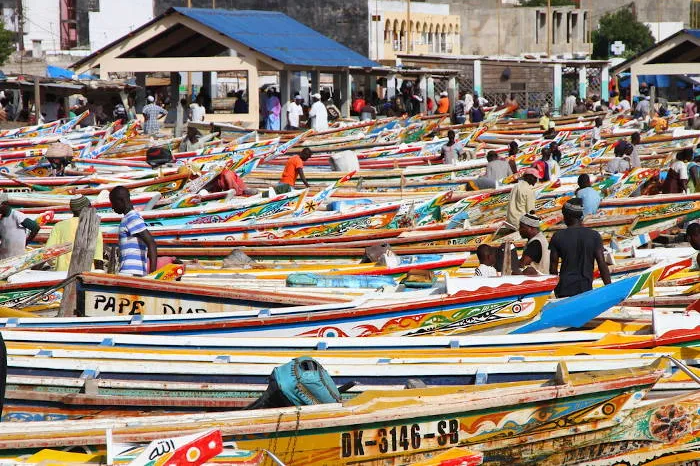

Senegal, ou República do Senegal, é um país africano localizado na região da África Ocidental. Sua capital é a cidade de Dacar. Banhado pelo oceano Atlântico, o território senegalês apresenta clima tropical e semiárido, relevo predominantemente plano e vegetação formada por estepes e savanas.
Aproximadamente um terço dos seus 17.196.000 habitantes vive em Dacar, além de apresentar uma ampla população rural. A economia do Senegal é baseada na exploração de recursos naturais, na pesca e na agricultura, com destaque para a produção de amendoim, e também no turismo.
O Monumento da Renascensa africana é um gigantesco monumento em bronze que representa os 50 anos da independência do Senegal da França. Localizado na cidade de Dakar. Conta com 49 metros de altura oferece um vista espetacular para a cidade e para o oceano Atlântico. Foi inaugurado a 4 de abri 2010, no dia nacional do Senegal.